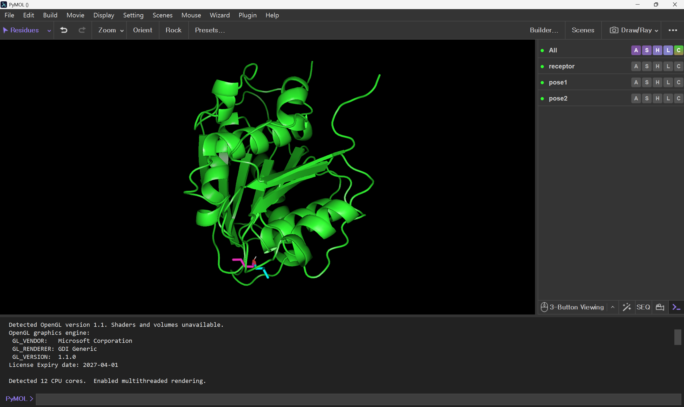
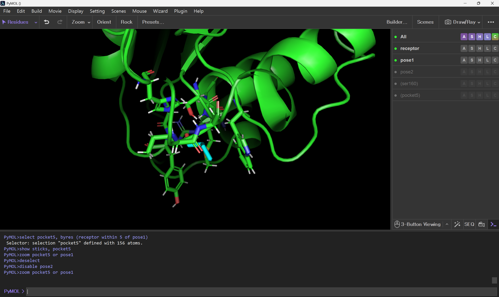
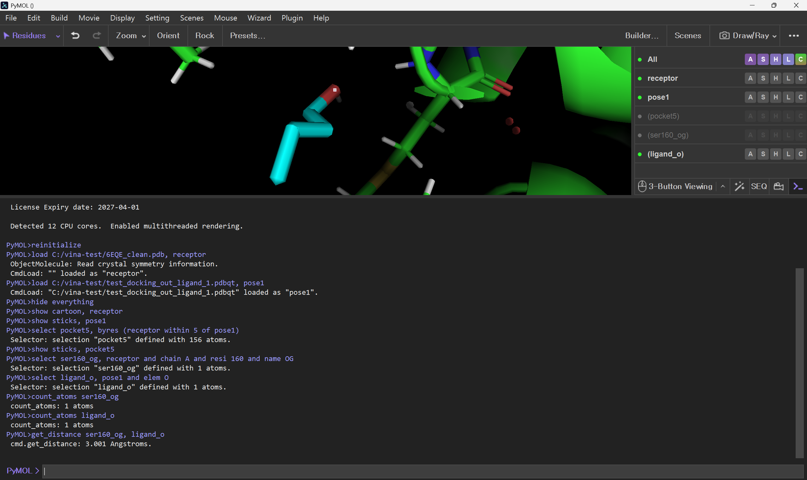

PyMOL
분자 구조를 시각화하고 selection과 거리 분석을 수행하는 molecular visualization program입니다.
Overview → Quick Start → Common Problems 순서로 먼저 읽어도 됩니다.
Overview
PyMOL은 분자 구조를 시각화하고 선택·분석하는 molecular visualization program입니다. 단순히 그림을 만드는 도구가 아니라 특정 residue와 atom을 선택하고 구조적 관계를 확인하는 데 사용할 수 있습니다.

Load와 Object
load protein.pdb, receptor
load pose1.pdbqt, pose1쉼표 뒤의 이름은 PyMOL 안에서 사용할 object 이름입니다. 이후 명령에서 이 이름을 정확히 사용해야 합니다.
Representation / Color
hide everything
show cartoon, receptor
show sticks, pose1| 표현 | 용도 |
|---|---|
| cartoon | 단백질 전체 구조 |
| sticks | ligand와 side chain |
| spheres | 원자의 공간적 크기 |
| surface | 분자 표면 |
Selection
기본 형식은 select 이름, 조건입니다.
select chainA, receptor and chain A
select ser160, receptor and resi 160
select oxygen, pose1 and elem O| 조건 | 의미 |
|---|---|
| chain | Chain |
| resi | Residue 번호 |
| resn | Residue 이름 |
| name | Atom 이름 |
| elem | 원소 |
Ligand 주변 Residue 찾기
select pocket5, byres (receptor within 5 of pose1)
show sticks, pocket5
zoom pocket5 or pose1
Distance
두 원자 사이 거리 숫자만 확인할 때는 get_distance가 간단합니다.
get_distance atom1, atom2
테스트 환경에서는 graphical distance object 생성이 불안정해 숫자 확인에는 get_distance를 우선 사용했습니다. 다른 환경에서는 distance name, atom1, atom2로 화면에 거리 object를 만들 수 있습니다.
Vina pose 분리
Vina multi-model PDBQT를 불러왔을 때 기대한 여러 state로 보이지 않는 경우가 있습니다.
count_states dockedvina_split --input docking_out.pdbqt분리된 pose 파일을 각각 다른 object 이름으로 load하면 관리하기 쉽습니다.
이미지와 Session 저장
png docking_view.png
save docking_session.pse.pse에는 object, representation, selection, camera 상태 등을 저장할 수 있습니다.
Quick Start
- Receptor와 pose 파일을 load합니다.
- Protein은 cartoon, ligand는 sticks로 표시합니다.
within과byres로 ligand 주변 residue를 선택합니다.get_distance로 필요한 원자 간 거리를 확인합니다.- PNG와 PSE로 결과와 작업 상태를 저장합니다.
Common Problems
Vina pose가 여러 개로 보이지 않아요
count_states를 확인하고 필요하면 vina_split으로 pose별 PDBQT를 생성합니다.
Selector-Error가 떠요
오른쪽 object panel에서 실제 object/selection 이름을 확인합니다.
Graphical distance 표시가 불안정해요
숫자 확인만 필요하면 get_distance를 사용합니다.
Quick Reference
| 명령 | 기능 |
|---|---|
| load | 구조 불러오기 |
| show / hide | Representation 표시/숨김 |
| color | 색상 변경 |
| select | Selection 생성 |
| within / byres | 거리 기반 residue 선택 |
| get_distance | 두 원자 사이 거리 계산 |
| png | 이미지 저장 |
| save ... .pse | Session 저장 |